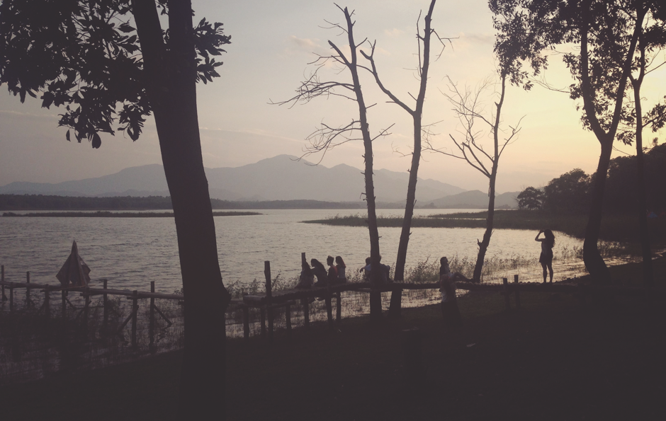
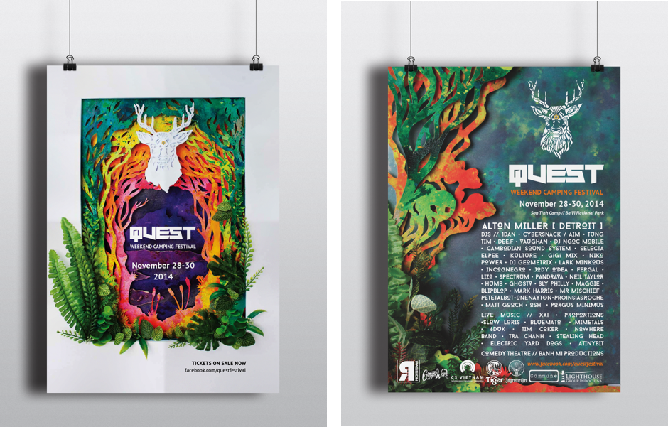
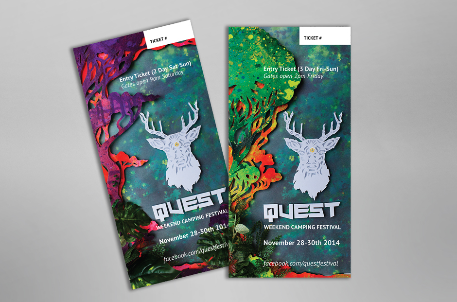
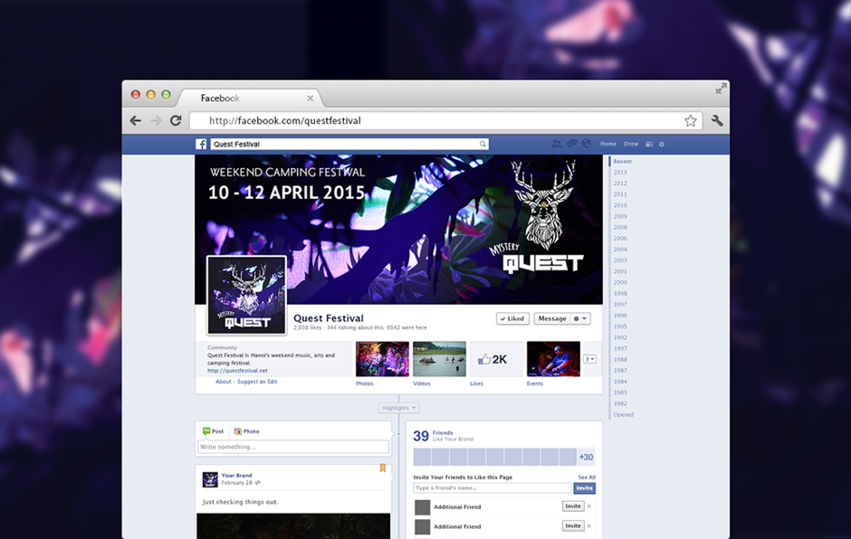
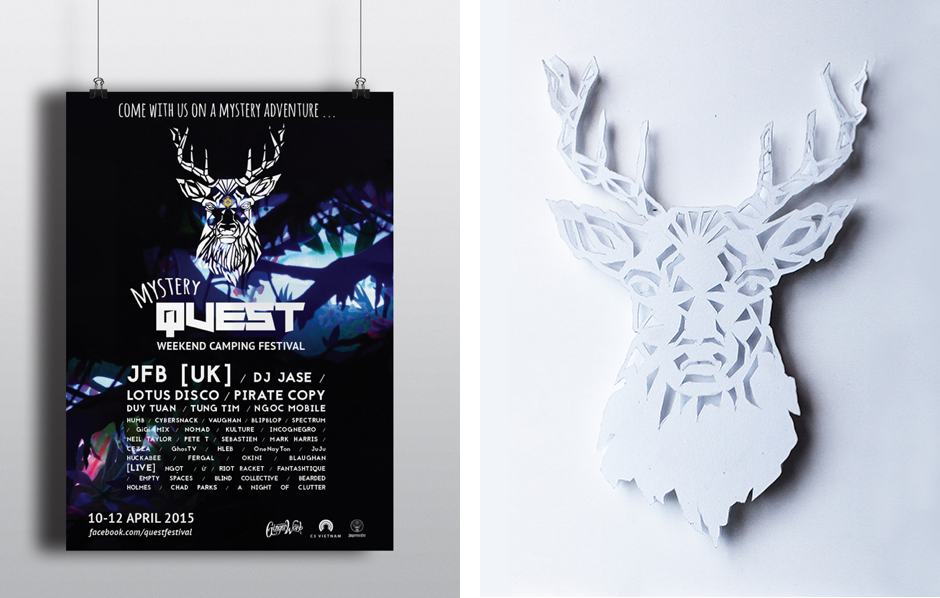
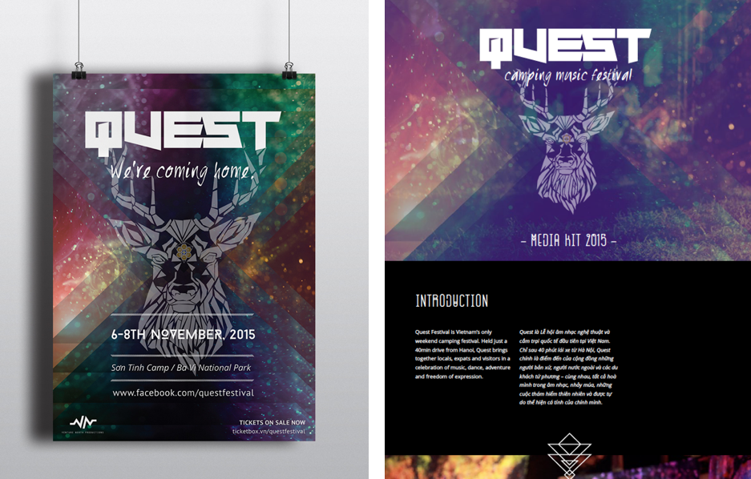

Promotional
CASE STUDY | QUEST FESTIVAL
Quest Festival is a small emerging camping festival located in Ba Vi National Park, just outside Hanoi, Vietnam. Music, art and culture come together over three days, providing festival goers with bands and electronic acts, creative workshops, themed campsites and lots of outdoor activities (it’s set in an adventure camp!).
I became involved with the art direction of the promotional and branding campaigns for the second and third events (Nov 2014, Mystery Quest 2015). I collaborated with artist Max Cooper to develop a visual language that completely captured our impression and experience of the festival. This project was developed during my time living in Hanoi.
Since its first appearance in 2013, Quest Festival has grown rapidly into one of South-East Asia’s most popular arts and lifestyle festival weekends. I was tasked with producing a media kit aimed at attracting new and bigger sponsors to partnership with Quest. After the Mystery Quest festival, the founders formed a new production company, Venture North Productions, to manage Quest and branch out into other events around Hanoi and the region.
The media kit was designed as a continuous scrolling PDF document that views like a website. An A4 printed version was also created. Along with the launch of the media kit, I designed a teaser promotional poster, banner and social media assets to promote ticket sales for the upcoming Quest Festival in Nov, 2015.
Ba Vi National Park – 2nd Quest promotional poster – lineup poster – entry tickets
Mystery Quest social media presence – lineup poster - 3D logo paper cut-out
4th Quest event promotional poster - Media kit detail
PHOTOGRAPHY | Nikolaj Svennevig , Amy Cleary
DESIGN CREDIT | Logo designed by MacMeo
ARTIST CREDIT | Artwork produced in collaboration with Max Cooper
CONNECT |questfestival.com - facebook.com/questfestival